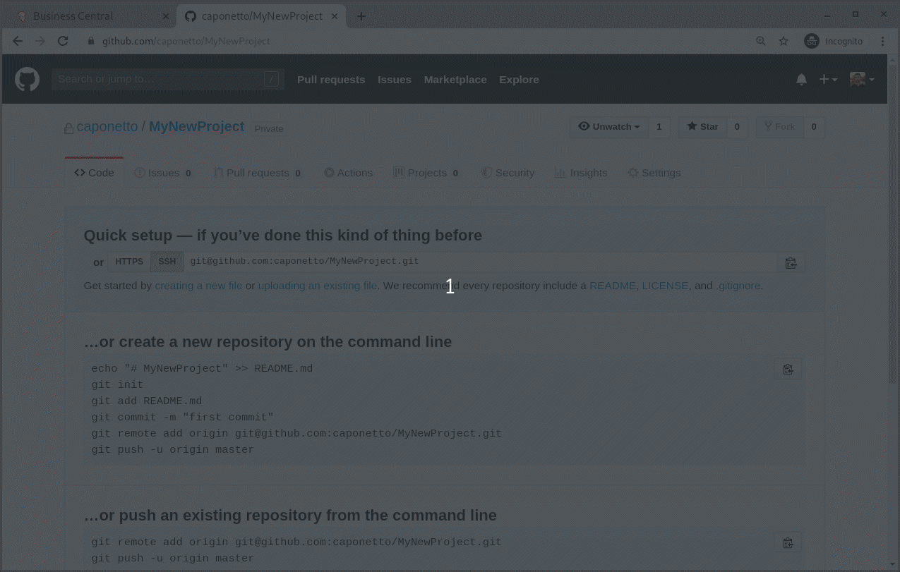

Import an empty repository into Business Central
Starting from Business Central v7.33, users can import an empty repository from a git provider service like GitHub into Business Central. Let’s check how it works in this quick post.

Overview
Projects stored on git provider services like GitHub can be easily imported into Business Central via the import feature, which allows project and branch selection from a given repository. By doing that, users can take advantage of the Business Central authoring environment to manage their business processes and decision rules.
In order to extend the import feature, the ability to import empty repositories has been enabled as well. Under the hood, a base KIE project will be created on Business Central after the empty repository is imported, skipping the project and branch selection steps. At this point, the git service provider repository remains empty.
Recall that all projects in Business Central are stored on their own git repository. Hence, the git provider service URL is set as the remote origin. It allows users to push back all changes to the git provider service automatically via git hooks or manually via the command line. Check out this post to learn more about how to automatically push every change to an external repository.
Demonstration
Go to Design → <you_space> and click on the Import Project button. As always, provide the repository URL and your credentials if the repository is private. Then click on the Import button and that’s it! A base KIE project will be created pointing to the repository URL as its remote origin.

And that’s all for today. Thanks for reading! 😃
Import an empty repository into Business Central was originally published in kie-tooling on Medium, where people are continuing the conversation by highlighting and responding to this story.